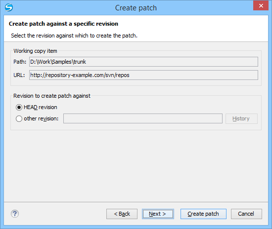

This type of patch contains changes between an old revision and the current content
from the selected item within the working copy.
This option is useful if you want to obtain differences between an older revision and the
current state of the working copy (for instance, to test how current changes apply to an
older version).
The steps are as follows:
Go to menu Tools > Create patch.
This opens the Create patch wizard.
Select the Create patch against a specific revision option in
the dialog box.
Click the Next button.
The second step of the wizard is opened:
Figure 1. Create Patch Wizard - Step 2

Select the revision to create patch against.
You can select between the HEAD revision and a specific
revision number. For the other revision option, you can click the
History button to display a list of the item
revisions.
Note: If the revision to create patch against is older
than the revision that the working copy item was updated for, the patch will include
changes that were made after the selected revision.